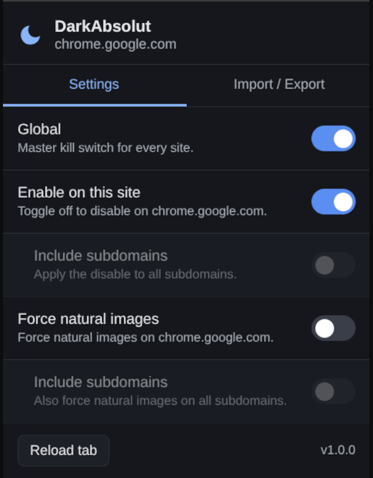
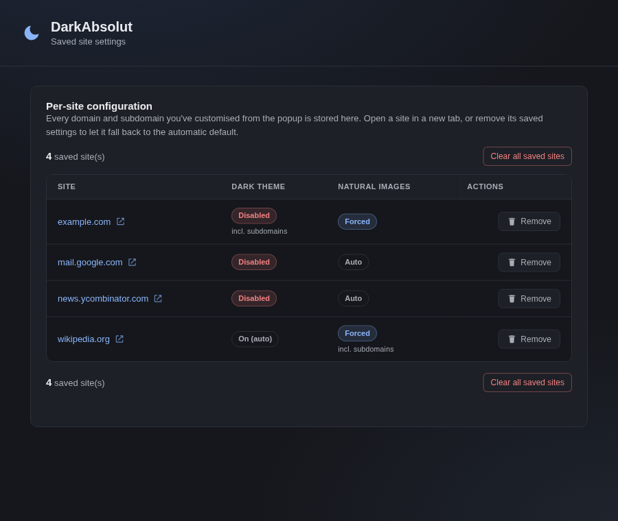

🌙
Automatic dark mode
Applies a tuned invert + hue-rotate filter to any light page, then re-inverts images, video and backgrounds so visual content keeps its true colors.
DarkAbsolut instantly darkens any site that doesn't ship its own dark theme — and leaves the ones that are already dark untouched. No flashing, no broken images, full per-site control.
Now on the Chrome Web Store, Microsoft Edge Add-ons and Firefox Add-ons — Opera & Brave install the Chrome build. Prefer source? Load it unpacked.

One filter-based engine, tuned with real detection so pages look right — not merely inverted.
Applies a tuned invert + hue-rotate filter to any light page, then re-inverts images, video and backgrounds so visual content keeps its true colors.
Respects color-scheme: dark and samples real viewport luminance, so sites that already have a dark theme are left completely alone.
A global kill switch plus per-domain enable/disable, with an optional “include subdomains” rule for whole families of sites.
On tricky sites, force every image, picture and CSS background to keep its original colors — even the ones the heuristic would normally skip.
One Manifest V3 codebase for Chrome, Edge, Brave and Firefox 121+ — a real service worker, no legacy background page.
Back up your whole configuration to JSON and restore it on another machine, plus a full options page listing every saved site.
Everything one click away from the toolbar — and a full page for managing saved sites.

Fast at document_start, careful before it paints.
The content script asks the service worker whether DarkAbsolut is enabled for this domain before doing anything.
It measures the page's effective background and honors color-scheme — already-dark pages are skipped entirely.
If needed it injects the filter and a MutationObserver keeps newly-added images and backgrounds looking correct.
From a store, or unpacked from source right now.
Live on the Chrome Web Store, Microsoft Edge Add-ons and Firefox Add-ons. Opera and Brave are Chromium-based, so their buttons install the Chrome build (Brave uses it directly; a dedicated Opera listing is pending).
chrome://extensions and enable Developer mode.about:debugging#/runtime/this-firefox.manifest.json.